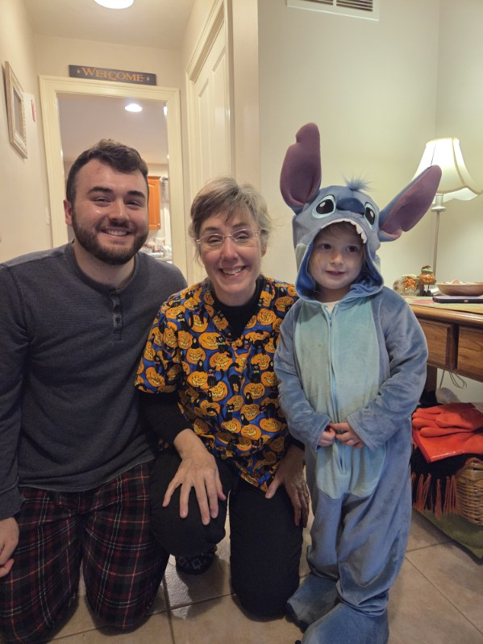
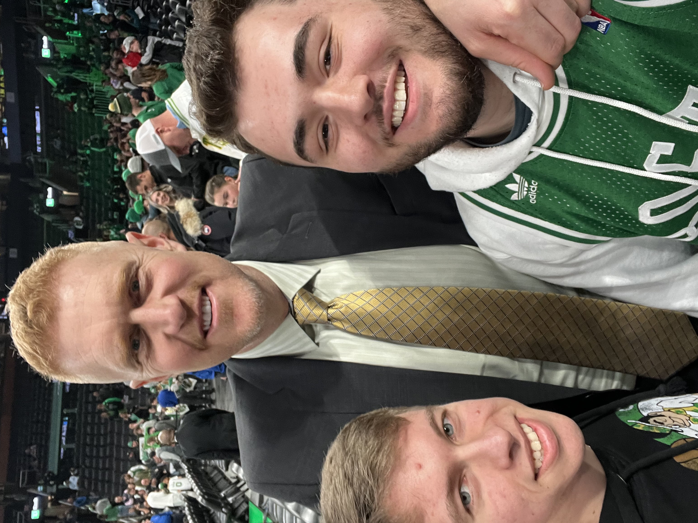

I'm currently 23 years old and born/raised in North Attleboro, MA. I've only been outside of New England once.
I have an older brother who attended NEIT and graduated from the mechanical engineering program.
I've graduated college already previously. I earned a bachelor's degree from Rhode Island College
in 2024 for Psychology and a minor in Marketing. I also graduated 1 full year early. When I graduate from NEIT
and establish a career I would like to move to New Hampshire or Maine. I also have a Godchild
named Ginny who is 3.5 years old now. Her name is partially inspired by Ginny Weasley from Harry Potter.

Myself, my mom, and Ginny last Halloween!
These are a few schools I attended. I graduated from North Attleboro High School in 2021. The entirety of
my senior year was online due to COVID. I attended RIC from 2021-2024 and recently started attending NEIT as
of fall 2025. So far NEIT is my favorite school I've attended.
My graduation photo from RIC in 2024

Photo from when my friend and I met Celtics legend Brian Scalabrine at a game!
Fun YouTube channel I enjoy that posts videos repairing old game consoles